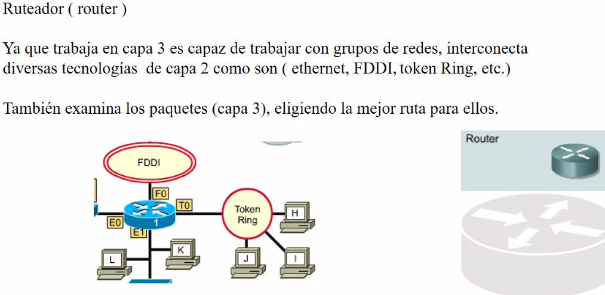

Es un dispositvo importante
Es de la capa 3 y aqui se encuentra la direccion IP.

Interconecta tecnologias de red (bus, estrella, anillo,et) (capa 1 y 2).
La capa 2 controla las tecnologias.
Equipos de capa 1 y capa 2 solo se pueden comunicar en una lan dentro de la misma red.
La red IP permite extender la comunicacion mas alla de una red local y comunicarse con nodos de otras redes.